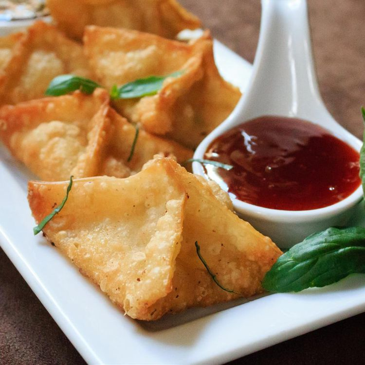

Home
Crab Rangoons

Description
Everyone will love these bite-sized crab rangoon, fried to crispy perfection. Just place the crab filling onto square wonton wrappers, fold them into triangles, pull up the other edges to seal, and fry them until golden brown. To make these in advance, freeze them on trays, then fry them from frozen just before your party.
Ingredients
- 2 8oz. Packages Cream Cheese, Softened
- 1lb. Crabmeat, Shredded
- 3tbsp. Dark Soy Sauce
- 1tsp. Minced Fresh Ginger Root
- 1/2tsp. Chopped Fresh Cilantro
- 1/2tsp. Dried Parsley
- 1/2tsp. Minced Garlic
- 1 14oz. Package Small Wonton Wrappers
- 1qt. Oil for Frying
Steps
- Mix cream cheese, crabmeat, soy sauce, ginger, parsley, anad garlic together in a bowl.
- Heat oil in a large heavy skillet or deep fryer to 360 degrees F (180 degrees C).
- While the oil is heating, place 1/2 to 1 tsp. cream cheese mixture into the center of a wonton wrapper. Moisten the wrapper edges and pull two corners together over filling to make a triangle. Pull two remaining corners up to join them, then press firmly to seal. Repeat to make remaining wontons. Place prepared wontons under a slightly moist paper towel until oil is hot.
- Working in batches, fry 3 or 4 wontons at a time in hot oil until golden brown and crispy, 1 to 2 minutes, flipping halfway through. Transfer wontons to a paper towel-line plate to drain. Serve hot.